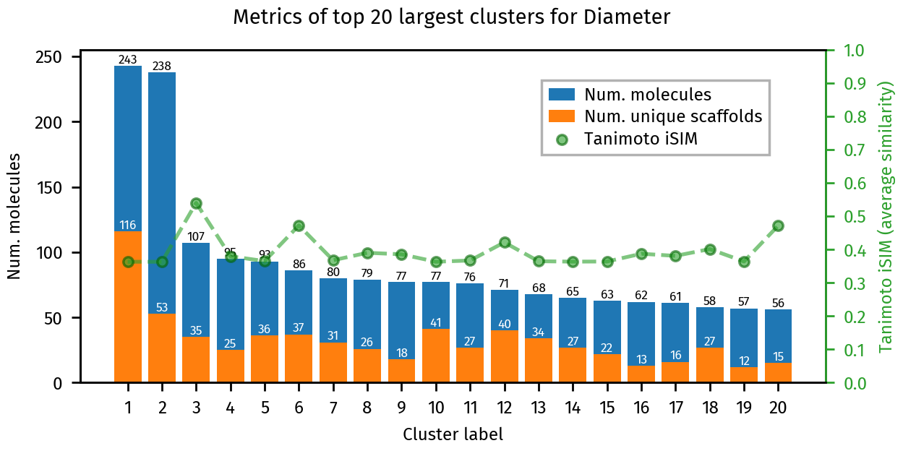
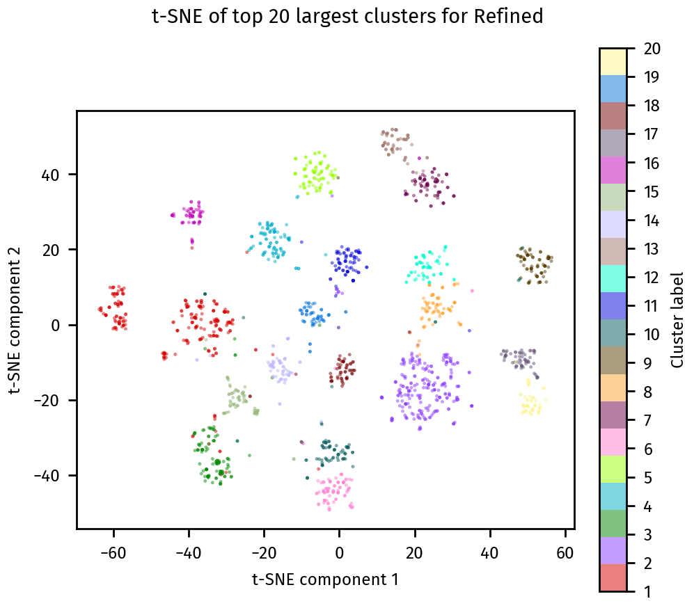

BitBIRCH best practices#
This is a tutorial notebook that showcases a simple workflow of BitBIRCH clustering, incluiding threshold selection, and the refinement of singletons.
Please reach out to one of the following with any questions or concerns.
Ramon Alain Miranda Quintana:
quintana At chem.ufl.eduKenneth Lopez Perez:
klopezperez At chem.ufl.eduIgnacio Pickering:
ipickering At chem.ufl.eduKrisztina Zsigmond:
kzsigmond At ufl.eduMiroslav Lzicar:
miroslav.lzicar At deepmedchem.com
Set Up#
First lets install the BitBirch-Lean package (if you have not already done so). To do this, run the following commands in your terminal:
git clone https://github.com/mqcomplab/bblean.git
cd bblean
pip install -v .
Lets import the bblean package and some bblean modules, which we will use throughout this example.
[1]:
import bblean
import bblean.plotting as plotting
import bblean.analysis as analysis
import bblean.similarity as iSIM
import numpy as np
import matplotlib.pyplot as plt
Now let’s take some SMILES strings and compute molecular fingerprints:
[2]:
smiles = bblean.load_smiles("./chembl-33-natural-products-subset.smi", max_num=10000)
# By default the fps created are of the "ecfp4" kind. Here we use "rdkit"
fps = bblean.fps_from_smiles(smiles, pack=True, n_features=2048, kind="ecfp4")
print(f"Shape: {fps.shape}, DType: {fps.dtype}")
Shape: (10000, 256), DType: uint8
The most efficient way to store and manipulate fingerprints is using packed fingerprint arrays. Packed arrays save the features in a compressed representation. To convert between packed and unpacked fingerprints you can use bblean.pack_fingerprints(fps) and bblean.unpack_fingerprints(fps).
Clustering fingerprints#
First to define an optimal threshold we will take a look into the average similarity of the fingerprints we want to cluster. For this we will use the iSIM formalism which can calculate the average similarity with linear complexity.
[3]:
average_sim = iSIM.jt_isim(fps)
print(f"Average similarity: {average_sim:.4f}")
Shape unpacked: (10000, 2048), DType unpacked: uint8
Shape re-packed: (10000, 256), DType re-packed: uint8
Now, we will estimate the standard deviation of the similarities using a stratified sample from our data set.
[7]:
isim_sigma = iSIM.estimate_jt_std(fps)
print(f"Estimated similarity mean and std: {average_sim:.4f}, std: {std:.4f}")
Estimated similarity mean: 0.1312, std: 0.0580
Now, we will do the initial clustering. We recommend using a threshold of the average plus 4 standard deviations.
[8]:
# Initialize the BitBirch tree
optimal_threshold = average_sim + 4 * std
bb_tree = bblean.BitBirch(branching_factor=50, threshold=optimal_threshold, merge_criterion="diameter")
# Cluster the packed fingerprints (By default all bblean functions take packed
# fingerprints)
bb_tree.fit(fps)
[8]:
BitBirch(threshold=0.3631015470344815, branching_factor=50, merge_criterion='diameter')
Lets analyze the results to check the number of singletons
[12]:
clusters = bb_tree.get_cluster_mol_ids()
print("Number of singletons", sum(1 for c in clusters if len(c) == 1))
Number of singletons 944
As we see, the number of singletons is quite high. To solve this we will recluster the tree. We will do this increasing the threshold by one standard deviation each iteration. Usually 5 iterations is enough to get rid of spurious singletons that are not really outliers.
For this example we see a reduction of almost one third of the singletons, depending on your application, you may want to change the extra_threshold parameter, and the number of iterations.
[13]:
bb_tree.recluster_inplace(iterations=5, extra_threshold=std, shuffle=False, verbose=True)
Current number of clusters: 1971
Current number of singletons: 944
Current number of clusters: 1746
Current number of singletons: 785
Current number of clusters: 1679
Current number of singletons: 729
Current number of clusters: 1658
Current number of singletons: 704
Current number of clusters: 1656
Current number of singletons: 702
Final number of clusters: 1652
Final number of singletons: 697
[13]:
BitBirch(threshold=0.6530114120345158, branching_factor=50, merge_criterion='diameter')
We see that the number of singletons significantly decreased
Further analysis and Visualization#
Lets inspect some features of the generated clusters:
[14]:
# First we run a cluster analysis on the resulting ids
clusters = bb_tree.get_cluster_mol_ids()
ca = analysis.cluster_analysis(clusters, fps, smiles)
# Afterwards we can use the utility functions on the bblean.plotting module
plotting.summary_plot(ca, title="Diameter")
plt.show()

[15]:
# Total clusters
print("Number of clusters: ", len(clusters))
# Clusters with more than 10 molecules
large_clusters = [c for c in clusters if len(c) > 10]
print("Number of clusters with more than 10 molecules: ", len(large_clusters))
Number of clusters: 1652
Number of clusters with more than 10 molecules: 227
We can visually inspect an individual cluster by calling plotting.dump_mol_images. By default this generates multiple images with 30 molecules each.
[16]:
plotting.dump_mol_images(smiles, clusters, cluster_idx=0)
We can also visualize the clusters using a t-SNE plot with plotting.tsne_plot:
[17]:
plotting.tsne_plot(ca, title="Refined")
plt.show()

Final cluster assignments#
Once we are happy with the clustering results, we can save the final cluster assignments. to a *.csv file.
[8]:
bb_tree.dump_assignments("smiles-assignments.csv", smiles)